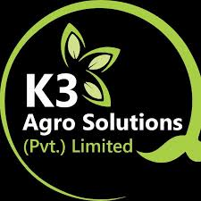

An invitation to K3 Agro Solutions to become an equal owner of the BIOSO business line: fourteen microbial fertilisers produced at K3 under Mega Farmer’s technical leadership, a clean-produce buy-back business, and a microbial culture lab that replaces imported inoculants — three income streams from one partnership.
Mega Farmer invites K3 Agro Solutions to build the BIOSO business line together as equal partners. Both companies will own the BIOSO line 50/50 — its brand presence, market reach, sales and profit — while production runs at K3 under the technical leadership of Ch. Umair Ashraf and Mega Farmer’s microbiology team.
K3 provides the production facility and assigns a dedicated BIOSO Fund from which the team, raw materials and production costs are managed. Mega Farmer brings more than eight years of research, fourteen field-tested formulations, a twenty-six-strain library and the people who built it. The formulations and recipes remain Mega Farmer’s proprietary know-how, protected by an MoU, NDA, MTA and manufacturing agreement under which neither partner can produce BIOSO anywhere else or set up a competing facility.
From this one platform the partnership earns from three streams: BIOSO biological fertilisers replacing synthetic salts in an almost untouched market; clean-grown and organic produce bought back from BIOSO farmers and sold at a premium at home and abroad; and locally produced microbial cultures and inoculants for silage, poultry, dairy and other industries that today import them. K3 receives 70% of all profit distributions until its invested capital is recovered; after that, everything is shared equally.
K3 Agro Solutions is a Kasur company established in 2016 by a third-generation farming family, known as Pakistan’s first branded corn-silage bale maker, growing around 1,500 acres of corn and supplying dairy farms nationwide. It already understands inoculants, fermentation and farm logistics. That makes it the ideal home for BIOSO production and for the culture lab described in stream three.
Under this proposal, the BIOSO production line operates inside K3 with K3’s production unit team, while Mega Farmer’s team manages production planning, fermentation and blending, quality control and batch release, raw-material specifications and sourcing, staff training and field agronomy. Ch. Umair Ashraf will serve as Technical Director of the BIOSO business line. The production recipes are run through Umair Ashraf and his microbiologist team, so the formulation secrets stay with Mega Farmer while K3 shares equally in everything the line earns.
Mega Farmer will produce the BIOSO range only through this partnership and nowhere else, and will dedicate its technical team to the BIOSO line at K3.
K3 will not re-engineer or reproduce the BIOSO formulations and will not set up its own competing facility; formulation ownership stays with Mega Farmer while the business line is shared equally.
MegaFarmer BIOSO is a brand of Xelora Industries (Pvt) Ltd, Lahore, built on one idea: from dead soil to living soil™. Over more than eight years the team studied the saline, alkaline and nutrient-locked soils of Punjab and Balochistan and built fourteen precision formulations powered by fourteen beneficial bacteria and ten beneficial fungi.
Arranged by crop stage, the range replaces an entire synthetic programme — soil preparation, roots, vegetative growth, flowering, fruit and grain fill, and protection — across every farming method.
Healthy soil is a living system in which billions of bacteria and fungi fix nitrogen, dissolve minerals, build structure and protect roots. Decades of chemical use, burning and low organic matter have starved that system. Drag the slider to see what BIOSO puts back.
Nitrogen-fixers pull nitrogen from the air; phosphate-solubilising bacteria and fungi release the phosphorus alkaline soil locks up; other strains free potassium, silicon, zinc and iron.
Microbes glue particles into crumbs. Within one to three seasons soil turns darker and softer, holds water and buffers high pH and salt.
Beneficial bacteria prime the plant’s own defences, while Trichoderma, Bacillus and biological agents suppress disease and pests.
Silicon, selenium and stress-reducing bacteria help crops grow through heat, drought and salinity — vital in Pakistan and the Gulf.
Pakistan’s soils are predominantly alkaline and low in organic matter, so much of the fertiliser farmers apply is locked up or lost, and they apply more every year for shrinking returns — with a bag of DAP now around Rs 17,000 and urea around Rs 4,500. In 2025 farmers bought about 6.73 million tonnes of urea and 1.34 million tonnes of DAP, more than Rs 1.06 trillion at today’s prices.
One per cent of that spending is about Rs 10.6 billion a year; one per cent of Pakistan’s 74.6 million arable acres is about 746,000 acres. Biological fertilisers remain a tiny share of use, which is why we describe BIOSO’s market as almost untouched: every farm in the country is a potential customer.
Sources: ProPakistani, Express Tribune, Kisan ka Pakistan (prices Nov 2026), Dawn/FAO, Fortune Business Insights, Straits Research.
The same fermentation know-how, microbiology team and farmer network that make BIOSO fertilisers also unlock two more businesses. Each stream feeds the others: fertiliser customers become produce suppliers, and the culture library behind BIOSO becomes a product line of its own.
Living, microorganism-based fertilisers and biopesticides that replace synthetic salts with equal results at lower cost, reviving soil through sustainable farming.
Explore stream 1 →We pre-book and buy the harvest of BIOSO farmers at better-than-mandi rates and sell it labelled, tested and traceable — at home, in the Gulf, and to Europe and the US once certified.
Explore stream 2 →A culture lab and mother-culture library at K3 producing silage inoculants, probiotics and industrial cultures that Pakistan currently imports — starting with K3’s own silage.
Explore stream 3 →Pakistan’s fertiliser market is dominated by synthetic salts. The alternatives that exist are single-strain products from research institutes with limited reach, imported biologicals priced in dollars and designed for temperate soils, and biostimulants with no live microbes at all. To the best of our knowledge, BIOSO is the only complete, stage-by-stage biological nutrition and protection system in the country — fourteen products that cover every crop stage, every major crop and every farming method.
The proposition to the farmer is simple and powerful: equal results with lower spending, healthier soil every season, fewer sprays and safer food. Because our production cost is low and our raw materials are local, BIOSO can be priced below the synthetic fertiliser it replaces while still carrying strong margins for the partnership.
Illustrative direction of change, not measured values.
A twenty-six-strain library and formulations that remain Mega Farmer’s know-how, produced only through this partnership.
Viable count, pathogen-free status and nutrient profile tested on every batch, building trust copycat products cannot match.
Demonstration on K3’s corn and progressive farms across Kasur, Okara, Sahiwal and Pakpattan; then dealers across Punjab, Sindh and KP, corporate farms, sugar-mill grower programmes and dairies.
Designed for the land conventional fertiliser fails on.
Every season Pakistani farmers grow good crops and still lose money, because when prices crash there is no one to buy at a fair rate. That is the gap stream two fills — and it is also what makes farmers choose BIOSO again and again.
Under the BIOSO programme, every enrolled farmer is offered a pre-booked purchase contract: before sowing, the partnership agrees to buy his harvest at Rs 5 to 10 per kilogram above the prevailing mandi rate, paid promptly on delivery. For a farmer who has watched tomatoes sell for Rs 4 a kilo or potatoes for Rs 200 a bag, that certainty is worth more than any discount on fertiliser. The result is a self-reinforcing loop: farmers buy BIOSO because it guarantees them a market, and the partnership gains a reliable supply of clean, traceable produce.
The produce is graded, tested for pesticide residues and heavy metals, packed in a pack-house at Kasur, and sold as MegaFarmer Clean-Grown with a laboratory certificate and a QR code that shows where and how it was grown. Fields that complete the three-year conversion are then certified organic by an accredited certification body, which unlocks the full organic premium of 20–40% in international markets.
Follow the loop from enrolment to the shelf.
Pakistan already proves it can sell organic food into Europe: its organic exports to the EU grew 18.8% in 2025, yet almost all of it was cereals. Fruit, vegetables, potatoes, kinnow and mango — products Punjab grows in abundance — are barely represented. BIOSO farms, with traceable inputs and residue testing from day one, are the natural supply base for certified organic exports through EU-recognised control bodies and USDA-accredited certifiers.
Residue-tested BIOSO produce for Lahore, Islamabad and Karachi supermarkets, online grocers and hotels.
Premium clean-grown and organic produce to the UAE, Saudi Arabia, Qatar and Oman, Pakistan’s established fresh-produce markets.
Fields that complete conversion are certified organic for Europe and the United States, starting with rice, potatoes, kinnow, mango and vegetables.
Silage cannot be made well without the right bacteria. Corn and fodder silage relies on lactic-acid bacteria such as Lactiplantibacillus plantarum, Pediococcus pentosaceus, Pediococcus acidilactici, Enterococcus faecium and Lactococcus lactis to drop the pH quickly, and on Lentilactobacillus buchneri to keep the silage stable and free of moulds when the bale is opened; Bacillus subtilis is also being studied for aerobic stability in corn silage. Today these inoculants come largely from foreign suppliers: imported products on Pakistani agri-stores sell for around Rs 17,850 per 100 g pack or Rs 14,925 per 5 litres.
K3 itself uses inoculants in its silage. The first goal of the culture lab is therefore immediate: produce a BIOSO silage inoculant for K3’s own bales, replacing imports and cutting cost, then sell it to the silage makers and dairy farms that K3 already supplies. From there, the same lab and team can serve every industry that depends on beneficial microbes.
| Industry | Typical species | What they do | The Pakistan opportunity |
|---|---|---|---|
| Silage & fodder | L. plantarum, P. pentosaceus, P. acidilactici, E. faecium, L. buchneri, Lactococcus lactis | Fast fermentation, less spoilage, stable bales | K3’s own bales first, then silage makers and dairy farms; Punjab’s silage programmes report around 30% more milk |
| Poultry & livestock probiotics | Bacillus subtilis, B. licheniformis, B. pumilus, B. amyloliquefaciens, Lactobacillus acidophilus, Saccharomyces cerevisiae | Gut health, feed efficiency, fewer antibiotics | 2.47 billion birds and over Rs 1,056 bn invested in poultry; Pakistan imported US$60 m of feed preparations in 2023 |
| Dairy fermentation | Lactococcus lactis, Streptococcus thermophilus, Lactobacillus delbrueckii bulgaricus | Yogurt, cheese and lassi starter cultures | Pakistan is among the world’s largest milk producers, with an estimated 72 bn litres a year |
| Wastewater & textile effluent | Bacillus, Pseudomonas, Nitrosomonas, Nitrobacter | Biological treatment of effluent | Textiles are over 60% of exports, and many effluent plants are not working effectively |
| Compost & biogas | Trichoderma, Bacillus, Aspergillus | Faster composting, better digester output | Huge volumes of crop residue, manure and mandi waste |
| Biopesticides | Bacillus thuringiensis, Beauveria bassiana, Metarhizium, Trichoderma | Biological pest and disease control | Pakistan approved biopesticide registration guidance in 2024; the pesticide market exceeds US$300 m |
| Aquaculture | Bacillus blends | Pond water quality and shrimp health | Growing shrimp farming in Sindh and saline areas of Punjab |
Sources: Farming Connect (Wales) silage additives guide; University of Wisconsin Extension; Kissan Ghar and Kissan Store listings; Pakistan Economic Survey via ProPakistani; Business Recorder; PIDE; APTMA; Agrilinks/CABI; World Bank WITS.
Mega Farmer’s microbiologists will set up and run the lab at K3 and maintain a complete mother-culture library of beneficial bacteria and fungi — isolated, identified, preserved and quality-tested — that serves both the BIOSO fertiliser line and a separate range of finished inoculant products for each industry. Because the cultures are produced locally, the partnership can undercut imported prices, deliver fresher product faster, and build a business in its own right that can bring in millions of rupees in sales every year.
We have calculated that BIOSO will cost the partnership about Rs 40–50 per litre to produce. On top of that sit bottling and packaging, labour and quality control, and delivery to distributors and farms. Mega Farmer and K3 will decide the commercial rates together, so that every cost is covered, the partnership keeps a healthy profit, and the farmer still pays far less than he spends today on synthetic fertilisers and pesticides.
On a typical acre of wheat a farmer applies about one bag of DAP and two and a half bags of urea, roughly Rs 28,000 per season. In the first season on BIOSO he keeps about half of that while the microbes establish; as soil life builds up the synthetic share falls further, and on revived soil to around a fifth from the third season. Use the price builder to see how a commercial price comes together — every figure is an adjustable assumption for the two partners to set.
The BIOSO production unit is built at K3’s site around food-grade plastic production drums of 10,000 litres each: most for multiplying the beneficial bacteria and fungi under controlled aeration and temperature, some for blending the non-microbial lines, and some for holding finished product until laboratory release.
Food-grade plastic (HDPE) drums of 10,000 litres; air blowers or compressors with air filters for aeration; agitators and mixers; water heating; RO water treatment unit; transfer pumps, food-grade pipes and valves; holding drums for finished product.
Crusher and shredder for rice husk, straw and mandi waste; hammer mill; composting and solid-fermentation beds; dryer; mixer and granulator; sieves; liquid filling and capping machine; labelling and batch coding; sealing; weighing scales; bagging machine; pallets and racks.
Autoclave, laminar-flow cabinet, incubators, microscope, colony counter, refrigerator and deep freezer for the culture library, pH and EC meters, glassware and media; plus a generator or solar back-up so living cultures never lose power.
This is an estimate. K3 can source the machinery and equipment through its own suppliers at the best market rate; prices vary with quality, machine type and production size, and the final list will be agreed together.
K3 will assign a dedicated BIOSO Fund for the business line, from which the Mega Farmer team, raw materials and production costs are managed. The team’s monthly funding is paid in advance and covers salaries and the technical assistance Mega Farmer provides for building the production unit, streamlining production and opening market access. The monthly amount will be decided mutually by both partners.
The one-time setup of drums, machinery and lab, estimated at Rs 40–60 lakh.
Monthly advance for the Mega Farmer team, agreed together.
Carriers, nutrients, media and cultures for every production run.
Bottles, cans, bags, labels and cartons.
Batch testing, product registration and organic certification.
Branding, demonstration farms, dealer launch and farmer education.
Mega Farmer’s team will manage production planning, fermentation and blending, quality control and batch release, raw-material specifications and sourcing, staff training and field agronomy, working alongside K3’s production unit team. Ch. Umair Ashraf will serve as Technical Director of the BIOSO business line.
Founder & CEO, Mega Farmer. Leads formulations, production recipes, scale-up and field programmes, and heads the full Mega Farmer team at K3.
Leads operations planning, commercial strategy, dealer network and partnerships for the BIOSO line.
Business outreach and international vendors; social media outreach on TikTok, YouTube, LinkedIn, X and Reddit; Google search, AIO, AEO and GEO visibility; and full customer relationship management.
Manages labour at the manufacturing unit, raw-material sourcing, labour training, and makes sure every batch meets production quality standards.
Culture library, fermentation control, batch release and inoculant development.
Media preparation, sampling, testing and record keeping.
Operators, packing, stores and dispatch, trained by Mega Farmer.
Equal members from both partners, meeting monthly to approve plans, budgets and pricing. K3 is represented by Mr. Muhammad Khan, Chief Operating Officer.
With three streams, our base case grows from about Rs 25 million of sales in year one to about Rs 1.45 billion in year five, with net profit of around Rs 350 million that year. Both partners share sales and profit equally — and K3 receives 70% of distributions until its invested capital is recovered.
Each bar is net profit after tax; the line marks each partner’s 50% share.
Both companies own the BIOSO business line equally — brand presence, market reach, sales, profit and every asset the line builds. Mega Farmer contributes its formulations, team and know-how; K3 contributes the production unit, the BIOSO Fund and its facilities. A BIOSO Steering Board with equal members from both sides approves budgets, pricing and plans.
From year two, half of each year’s profit is distributed and half retained for growth. 70% of every distribution goes to K3 until it has recovered its invested capital; after that, profits are shared 50/50. The simulator shows how the split works for any capital amount the partners agree.
K3 Agro Solutions — production unit, BIOSO Fund, facilities and network.
Mega Farmer — formulations, Technical Director, microbiology team and brand.
Planning estimates, not guarantees: gross margins ~65% on fertilisers, 25% on produce, 60% on cultures; tax 29%. Operating costs include the BIOSO team. Until K3’s capital is recovered, distributions are split 70/30 in K3’s favour.
The Gulf imports most of its food, farms on sandy, saline soil under extreme heat and is spending heavily on food security — exactly the problem BIOSO’s desert range was designed to solve. A Pakistani plant with Gulf registrations becomes a low-cost supplier to a market growing over eleven per cent a year, and a supplier of clean-grown produce to the Gulf’s import-dependent retailers.
The route: register the products in Pakistan, then in the UAE and the other GCC states; appoint a Gulf distributor; and, as volumes grow, open a Gulf entity that can access local grants and soft loans. Gulf funding can grow the export business without diluting either partner.
Turning rice husk and straw into raw material gives farmers a reason not to burn, cutting the smog over Lahore.
Every bag of urea replaced avoids the gas used to make it and cuts nitrous oxide from the field.
Pre-booked buy-back contracts mean fewer harvests dumped on the roadside when prices crash.
Living soil absorbs and holds water — critical under shrinking canal supplies and on Gulf desert farms.
Local silage inoculants and probiotics replace imported cultures and keep foreign exchange at home.
Zero hunger, clean water, climate action and life on land; Green Pakistan and Gulf food-security strategies.
Proposal accepted; MoU, NDA, MTA, technology transfer and manufacturing agreements signed; first BIOSO Fund budget approved.
Drums, machinery and laboratory installed at K3; mother-culture library established; K3 production team trained.
Every product tested and registered; first commercial batches; demonstration on K3’s corn and partner farms; first dealers signed.
First locally produced inoculant used in K3’s own silage, then offered to silage makers and dairy farms.
Pre-booked contracts with BIOSO farmers; clean-grown produce launched in modern retail; dealer network across Punjab.
GCC registrations and exports; poultry probiotic and industrial culture products launched.
Organic certification for EU and US exports, national leadership in biological inputs, and a growing culture business.
Once K3 accepts this proposal, both partners will sign the agreements required to put it into effect. The detailed terms will be finalised together with both companies’ advisers.
Records the partnership, the 50/50 ownership of the BIOSO line, the BIOSO Fund, the three streams and the 70% priority return to K3.
Keeps all technical and commercial information shared between the partners confidential.
Governs the strains, mother cultures and biological materials used at K3, which remain Mega Farmer’s property.
Sets out how BIOSO technology is applied in the production line at K3 under Mega Farmer’s technical leadership.
Confirms that formulations and recipes remain Mega Farmer’s, and how jointly built brand and market assets are shared.
Covers production at K3, quality, the BIOSO Fund, mutual exclusivity and the roles of both teams.
Let’s build BIOSO together as equal partners. On acceptance, we will agree the first BIOSO Fund budget and the team’s monthly funding, finalise the production unit list with K3’s suppliers, and sign the partnership agreements.
Founder & CEO · Technical Director, BIOSO
Xelora Industries (Pvt) Ltd, Lahore
contact@megafarmer.store
+92 321 4999759 · megafarmer.store
Chief Operating Officer
Head office: near Bhatti Hospital, opposite Total Parco Petrol Pump, Kasur
k3chiefoperatingofficer@gmail.com
Mob +92 324 4272455 · Tel 049-2724221, 049-2724241
www.k3agrosolutions.com